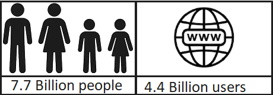

This is how it started. in the 1960s as a way for government researchers to share information the internett started. Back in the day computers where lager and to share information was diffecult. Another catalyst in the formation of the Internet was the heating up of the Cold War. The Soviet Union's launch of the Sputnik satellite spurred the U.S. Defense Department to consider ways information could still be disseminated even after a nuclear attack. This eventually led to the formation of the ARPANET (Advanced Research Projects Agency Network), the network that ultimately evolved into what we now know as the Internet. ARPANET was a great success but membership was limited to certain academic and research organizations who had contracts with the Defense Department. In response to this, other networks were created to provide information sharing.
in mid 2019 the world had 7.7 billion people. Thats a lot of people. But how many do you think has access to the internett?
4.4 billion is the right answer. thats just about half. We use the internet everyday. And most of us don't think of it. its just a way of life now. We see something we like, snap a photo of it, and share it on social media. We need directions or are lost and simply open our smart phone and google maps wil help you. If your haveing a heated debate and want to fact check you can google it from enywhere. Have you even heard of a encyclopedia ? have you ever seen one?
Have you heard of starlink? No ? It is an ambitious project to bring the internet to people who doesn't have it. There are many reasons to why they dont have. it might be too hard to build in the region they live inn. so this is a great way to give people who live without it a chance to experiance it
Let's start with the biggest satellite Earth has, the Moon. Surprised? The definition of satellite is ,in the context of spaceflight, a satellite is an object that has been intentionally placed into orbit. These objects are called artificial satellites to distinguish them from natural satellites such as Earth's Moon. Now that you know what a satellite is let's move on
Common types include Earth observation satellites. such as environmental monitoring, meteorology, map making. So they are used in, trying. to predict the weather and follow natural disasters such as hurricanes and storms.
GPS. Maybe you knew this one but it is an important function. And they do so much more. like map the stars. But there are problems as well. They do provide communication but they also block some types. Like radio, and images from observatories